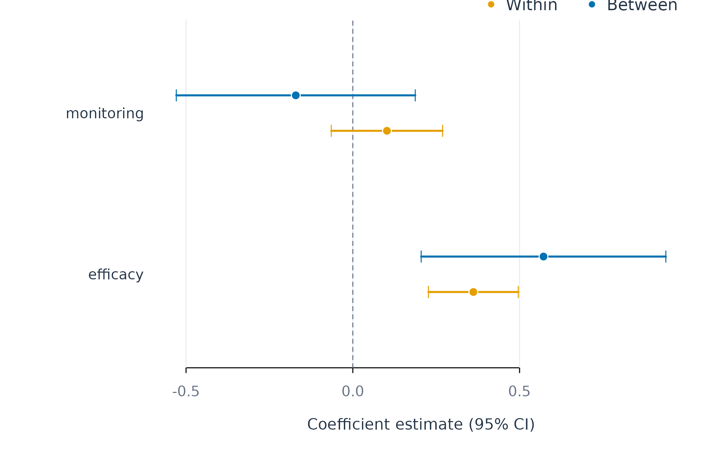

Within- and Between-Person Effects with fit_within_between()
Source:vignettes/fit-within-between.Rmd
fit-within-between.RmdAnalytic question
fit_within_between() estimates two coefficients for each
time-varying predictor. The within-person coefficient asks whether a
person’s outcome is higher when the predictor is above that person’s
usual level. The between-person coefficient asks whether people with
higher predictor means also have higher outcome means.
fit_within_between() takes a repeated-measures panel and
returns an idiographic_wb fit with component-labelled
coefficients, predictions, metrics, contextual contrasts, and variance
components. The decomposition follows the person-mean approach to panel
models (Mundlak
1978).
Fit the hybrid model
fit_within_between() models effort from efficacy and
monitoring at the pooled scope. Table 1 reports within-person,
between-person, and contextual effects. The contextual effect is the
between-person coefficient minus the within-person coefficient.
wb_fit <- fit_within_between(analysis_data, y = "effort", x = c("efficacy", "monitoring"), id = "name", time = "day", scope = "pooled")
contextual(wb_fit)
#> variable within between contextual S.E. 95% CI p
#> -------------------------------------------------------------------------------
#> efficacy 0.3614 0.5717 0.2103 0.2005 [-0.231, 0.652] 0.317
#> monitoring 0.1023 -0.1710 -0.2733 0.2034 [-0.721, 0.174] 0.206
#>
#> scope = pooled, model = within_between, estimator = ols, subject = .all, subgroup = .allfit_within_between() estimates a positive within-person
efficacy coefficient of about 0.36 and a positive between-person
coefficient of about 0.57 in Table 1. Their contextual difference is
about 0.21, and its confidence interval includes zero. Monitoring has a
positive within-person estimate and a negative between-person estimate,
but the contextual interval also includes zero.
Inspect all coefficient components
coefs() retains the component and source-variable
labels. Table 2 shows the pooled coefficient table.
coefs(wb_fit, scope = "pooled")
#> scope model estimator subject subgroup term component
#> 1 pooled within_between ols .all .all (Intercept) .none
#> 2 pooled within_between ols .all .all efficacy_within within
#> 3 pooled within_between ols .all .all monitoring_within within
#> 4 pooled within_between ols .all .all efficacy_between between
#> 5 pooled within_between ols .all .all monitoring_between between
#> variable estimate std_error statistic p_value conf_low
#> 1 .none 33.8637125 9.93413092 3.408825 0.0058373502 11.99883776
#> 2 efficacy 0.3614120 0.06120797 5.904657 0.0001024238 0.22669420
#> 3 monitoring 0.1023306 0.07578441 1.350286 0.2040512008 -0.06446975
#> 4 efficacy 0.5717086 0.16663789 3.430844 0.0056146861 0.20494103
#> 5 monitoring -0.1709939 0.16275861 -1.050598 0.3159766188 -0.52922315
#> conf_high
#> 1 55.7285872
#> 2 0.4961299
#> 3 0.2691310
#> 4 0.9384761
#> 5 0.1872354coefs() identifies efficacy’s within-person coefficient
as statistically different from zero in Table 2. The estimate describes
daily deviations from a learner’s own efficacy mean. It should not be
reported as a contrast between learners.
Plot within and between estimates
plot_components() draws component estimates and
confidence intervals for each predictor. Figure 1 uses orange for
within-person effects, blue for between-person effects, and green for
contextual differences.
plot_components(wb_fit, scope = "pooled")
Figure 1. Within-person, between-person, and contextual coefficients with confidence intervals.
Figure 1 shows that efficacy has positive within-person and between-person coefficients. Monitoring changes sign across levels. The intervals convey greater uncertainty in the between-person and contextual quantities because they depend on 12 independent learner means.
Assumptions and failure checks
fit_within_between() requires predictors that vary
within people and across people. A person-constant predictor cannot
identify a person-specific within effect. A predictor with identical
person means cannot identify a between effect. The OLS estimator
clusters inference by person. The optional mixed estimator delegates to
lme4.
fit_within_between() gives distinct names to decomposed
columns and labels each returned coefficient by component. This prevents
a raw-score coefficient from being interpreted at the wrong level. The
model remains associational unless the research design and covariate
assumptions identify a causal effect.
When to use which
fit_within_between() is appropriate when a predictor
varies at both levels and the distinction is substantively important.
preprocess_panel() is appropriate when decomposed columns
are needed for another modelling function. fit_lm() is
appropriate when the predictor is already defined at the intended level
or when a raw conditional association is the target.